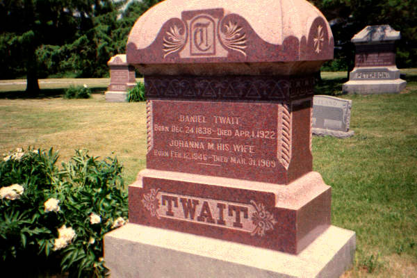

Ancestory

DANIEL DANIELSEN TWAIT
Born: Klungtveit Farm, Nedstrand, Norway // December 26, 1837
Emigrated: 1860
Married: Johanna M.
Died: LaSalle County, Illinois // April 1, 1922
Buried: Fox River Lutheran Cemetery, LaSalle County, Illinois
BORRE (BEN) NILSEN TWAIT
Born: Klungtveit Farm, Nedstrand, Norway // December 23, 1860
Emigrated: 1881
Married: Josephine
Died: Buffalo Center, Iowa // January 27, 1930
Buried: Graceland Cemetery, Buffalo Center, Iowa
NILS NILSEN TWAIT
Born: Klungtveit Farm, Nedstrand, Norway // May 28, 1863
Emigrated: from Stavanger to London, and then to New York // Left in 1883
Died: Chokio, Minnesota // November 2, 1963
Buried: Chokio Lutheran Cemetery, Chokio, Minnesota
SYVERT NILSEN TWAIT
Born: Klungtveit Farm, Nedstrand, Norway // April 2, 1868
Emigrated: from Stavanger to London, and then to New York // Left in 1883
Married: Janna B.
Died: LaSalle County, Illinois // 1932
Buried: Fox River Lutheran Cemetery, LaSalle County, Illinois
NILS DANIELSEN KLUNGTVEDT, Reverend
Born: Klungtveit Farm, Nedstrand, Norway // April 27, 1890
Emigrated: 1908
Married: Magdalene
Died: Minneapolis, Minnesota November 22, 1972
Buried: Bethany Lutheran Church Cemetery, Bricelyn, Minnesota